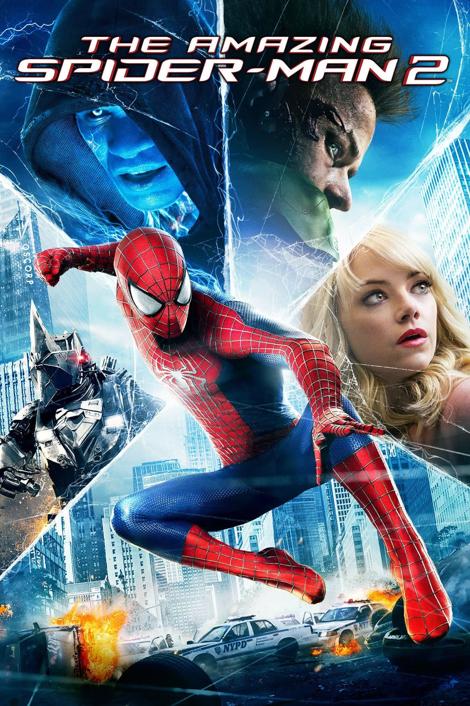
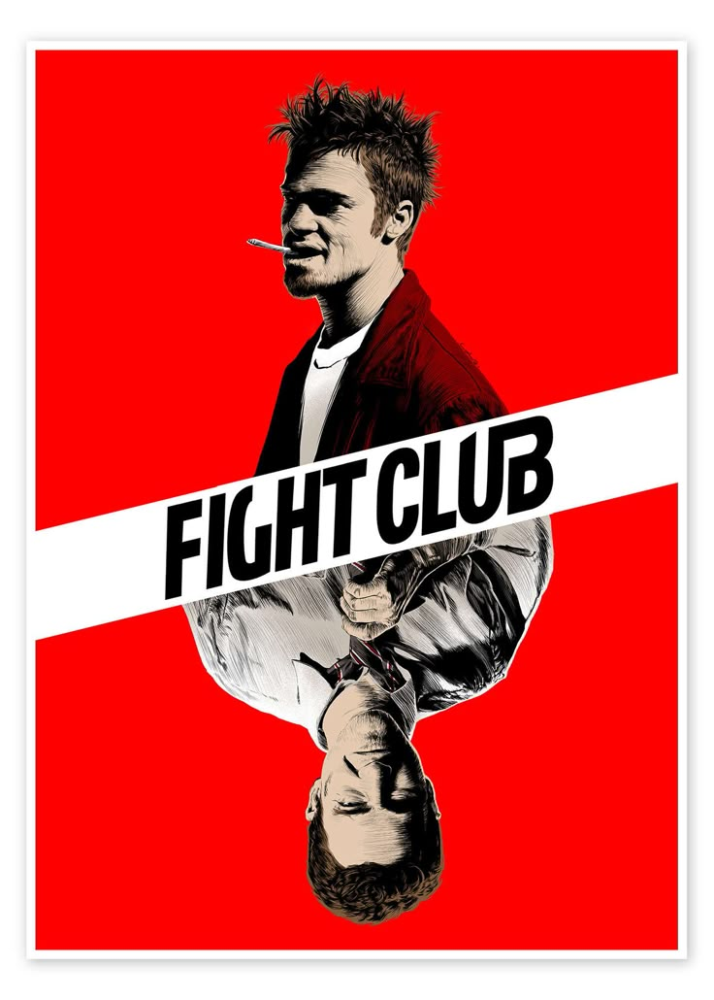
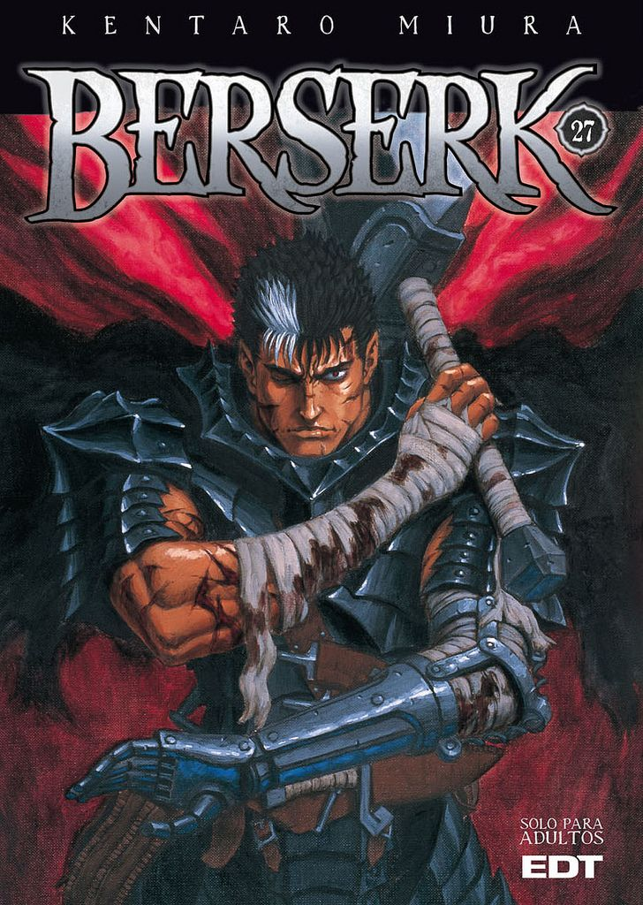

FAVOURITE MULTIMEDIA
FAVOURITE SONGS:🎶
1.Seven
2.WILDFLOWER
3.Sao_Paulo
FAVOURITE MOVIES 🎥:
1. AMAZING SPIDER MAN

The Amazing Spider Man is a 2012 superhero film based on the Marvel Comics character Spider-Man. Directed by Marc Webb, the film stars Andrew Garfield as Peter Parker/Spider-Man. The story follows Peter Parker, a high school student who gains spider-like abilities after being bitten by a genetically modified spider. As he learns to control his powers, he must confront the villainous Dr. Curt Connors, who transforms into the monstrous Lizard. The film explores themes of responsibility, identity, and the challenges of balancing a normal life with superhero duties.
2.FIGHTCLUB

Fight Club is a 1999 American film directed by David Fincher and starring Brad Pitt, Edward Norton, and Helena Bonham Carter. It is based on the 1996 novel by Chuck Palahniuk. Norton plays the unnamed narrator, who is discontented with his white-collar job. He forms a "fight club" with a soap salesman, Tyler Durden (Pitt), and becomes embroiled with an impoverished but beguiling woman, Marla Singer (Bonham Carter).
3.BERSERK

Berserk is a dark fantasy anime series based on the manga of the same name by Kentaro Miura. The story follows Guts, a lone mercenary with a tragic past, as he battles against demonic forces and seeks revenge against his former friend turned enemy, Griffith. The series explores themes of fate, free will, and the struggle between good and evil in a brutal medieval world.